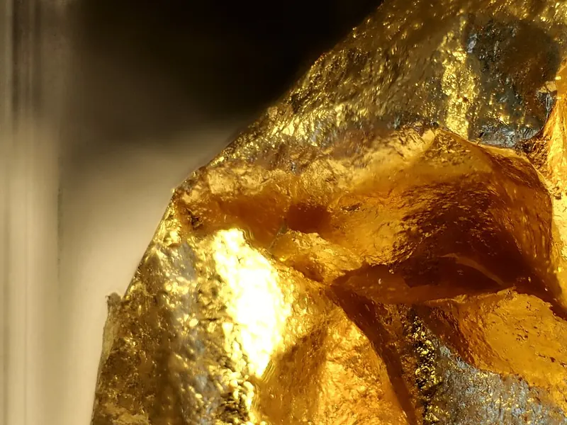

Cambridge Lower Secondary · Science 0893 · Stage 8 · Chemistry
The Structure of the Atom
The Rutherford model of the atom, the charges of protons, neutrons and electrons, the gold foil evidence for the nucleus, and the electrostatic attraction that holds every atom together.
British & IGCSE › Checkpoint 8 › Checkpoint 8 Science — Complete Course
- Describe the Rutherford model of the atom: a tiny, positive nucleus at the centre with electrons moving around it, and mostly empty space. (8Cm.01)
- Know the charges of the three particles: electrons are negative, protons are positive and neutrons have no charge. (8Cm.02)
- Know that the attraction between positive and negative charges (electrostatic attraction) is what holds an atom together. (8Cm.03)
1. Key words
| Word / phrase | Meaning / use |
|---|---|
| atom | ذرة — the smallest particle of an element |
| nucleus | النواة — the tiny centre of an atom; it contains protons and neutrons |
| proton | بروتون — a particle in the nucleus with a positive (+) charge |
| neutron | نيوترون — a particle in the nucleus with no charge |
| electron | إلكترون — a tiny particle with a negative (−) charge that moves around the nucleus |
| charge | شحنة — positive (+), negative (−) or none |
| neutral | متعادل — has no overall charge |
| electrostatic attraction | تجاذب كهروستاتيكي — the pull between opposite charges |
| repel | يتنافر — push apart (like charges do this) |
| model | نموذج — a simple picture or idea that helps explain something we cannot see |
| analogy | تشبيه — comparing something hard to understand with something familiar |
2. Atoms are made of smaller particles
In Stage 7 you learned that every substance is made of particles, and that an element is made of only one type of atom. Atoms are far too small to see, even with the best light microscope — a line of about 10 million atoms would be only 1 mm long. But scientists found that atoms themselves are made of even smaller particles: protons, neutrons and electrons.
| Particle | Charge | Where it is found | Mass (compared with a proton) |
|---|---|---|---|
| proton | positive (+) | in the nucleus | 1 |
| neutron | none (0) | in the nucleus | 1 |
| electron | negative (−) | moving around the nucleus | very small (about 2000 times lighter) |
- Proton = Positive.
- Neutron = Neutral (no charge).
- Electron = the Extra-light one, on the Edge, negative.
An atom has the same number of protons and electrons. Each proton has one positive charge and each electron has one negative charge, so the charges cancel. This is why an atom is neutral — it has no overall charge. Neutrons have no charge, so the number of neutrons makes no difference to the overall charge.
3. The Rutherford model of the atom
The picture of the atom used today at this stage is the Rutherford model (also called the nuclear model). It has four key ideas you must be able to describe:
- At the centre is a tiny nucleus. It is positive because it contains the protons. It also contains the neutrons.
- Almost all the mass of the atom is in the nucleus.
- The negative electrons move around the nucleus, a long way from it.
- Most of the atom is empty space.
How small is the nucleus? If an atom were blown up to the size of a football stadium, the nucleus would be about the size of a pea on the centre spot, and the electrons would be like specks of dust flying around the outer seats. Everything in between is empty space. This comparison is an analogy — it helps you picture something you can never see.
4. How the model was discovered
Models in science change when new evidence is found. The story of the atom is a famous example.
| When | Who | What happened |
|---|---|---|
| 1897 | J. J. Thomson | Discovered the electron, a tiny negative particle inside atoms. So atoms are not solid, unbreakable balls. |
| 1904 | J. J. Thomson | Suggested the plum pudding model: a ball of positive charge with negative electrons stuck in it, like fruit in a pudding. |
| 1909 | Hans Geiger and Ernest Marsden (working for Ernest Rutherford) | Fired positive alpha particles at very thin gold foil — the gold foil experiment. |
| 1911 | Ernest Rutherford | Explained the results with a new model: a tiny positive nucleus with electrons around it — the Rutherford model. |
| 1932 | James Chadwick | Discovered the neutron, the particle with no charge in the nucleus. |
5. The gold foil experiment — evidence for the nucleus
Alpha particles are tiny, fast-moving particles with a positive charge. Geiger and Marsden fired them at a sheet of gold foil only a few hundred atoms thick, and recorded where they went. If the plum pudding model were right, the positive charge would be spread thinly everywhere, so all the alpha particles should go straight through or bend only very slightly. That is not what happened.

| Observation | What it tells us about the atom |
|---|---|
| Most alpha particles went straight through. | Most of the atom is empty space. |
| A few were deflected (bent off their path). | There is a positive charge in the atom that repels the positive alpha particles (like charges repel). |
| Very few (about 1 in many thousands) bounced back. | The positive charge is packed into a tiny centre — the nucleus — which also holds most of the mass. |
Checkpoint often gives you one observation and asks what it shows. Always link the two: "Most went straight through, so the atom is mostly empty space." Use the words most / a few / very few exactly — they carry the marks.
6. What holds an atom together?
You already know from magnets and static electricity that opposite charges attract and like charges repel. The same rule works inside atoms.
- The nucleus is positive (it contains protons). The electrons are negative.
- Opposite charges attract, so every electron is pulled towards the nucleus. This pull is called electrostatic attraction.
- Electrostatic attraction is what holds the atom together: it keeps the electrons in the atom, moving around the nucleus, instead of flying away.
- Neutrons have no charge, so they are not attracted to the electrons. (A different, very strong force holds the protons and neutrons together inside the nucleus — you will meet it in later years.)
الذرة فيها نواة صغيرة جدًا في المنتصف، موجبة الشحنة لأن فيها البروتونات (+)، ومعاها النيوترونات (بدون شحنة). الإلكترونات (−) بتلف حوالين النواة، ومعظم الذرة فراغ. الموجب والسالب بيتجاذبوا — ده اسمه التجاذب الكهروستاتيكي — وهو اللي بيمسك الإلكترونات في الذرة. عدد البروتونات = عدد الإلكترونات، علشان كده الذرة متعادلة (مالهاش شحنة).
7. Models and analogies
Nobody has ever seen a proton or an electron directly, so scientists use models. An analogy is a kind of model that compares the atom with something familiar. Every analogy has strengths and weaknesses — Checkpoint can ask for both.
| Analogy | How it is like the atom | How it is not like the atom |
|---|---|---|
| The Solar System: Sun in the middle, planets moving around it | Small centre with most of the mass; things moving around it; mostly empty space | Planets are held by gravity, electrons by electrostatic attraction; planets are not charged; the Sun is not made of protons and neutrons |
| A pea in a football stadium | Shows how tiny the nucleus is compared with the whole atom | A stadium has a solid floor and seats; an atom is mostly empty space |
| Plum pudding: fruit stuck in a cake | Was a useful model of the old (Thomson) idea | Wrong for real atoms: the positive charge is not spread out, it is in a tiny nucleus |
8. Worked examples
Worked example 1 — Complete the table about the particles in an atom. [3]
| Particle | Charge | Where in the atom |
|---|---|---|
| proton | …… | nucleus |
| …… | no charge | …… |
| electron | …… | …… |
- Row 1: proton → positive (+).
- Row 2: the particle with no charge is the neutron; it is found in the nucleus.
- Row 3: electron → negative (−), moving around the nucleus (outside the nucleus).
- Marking: usually 1 mark per correct row. Common mistake: writing "neutral" for the electron, or putting electrons inside the nucleus.
Worked example 2 — An atom of boron has 5 protons and 6 neutrons. (a) How many electrons does it have? [1] (b) How many particles are in the nucleus? [1] (c) Explain why the atom has no overall charge. [1]
- (a) Atoms are neutral, so electrons = protons = 5.
- (b) Nucleus = protons + neutrons = 5 + 6 = 11 particles.
- (c) The 5 positive charges of the protons are cancelled by the 5 negative charges of the electrons; neutrons have no charge.
- Common mistake: in (a), giving 6 (the number of neutrons) — the electron number always matches the proton number in an atom.
Worked example 3 — In the gold foil experiment, a few alpha particles were deflected. Alpha particles are positive. What does this tell you about the atom? [2]
- There is a positive charge inside the atom (1)…
- …which repels the positive alpha particles, because like charges repel (1).
- Common mistake: "they hit electrons". Electrons are far too light to push an alpha particle off course — it was the positive nucleus.
Worked example 4 — Explain what holds the electrons in an atom. Use ideas about charge in your answer. [2]
- The nucleus is positive (it contains protons) and the electrons are negative (1).
- Opposite charges attract, so there is an electrostatic attraction that pulls the electrons towards the nucleus and keeps them in the atom (1).
- Exam tip: name both charges and use the word attract/attraction. "Gravity" or "the neutrons hold them" scores 0.
Worked example 5 — A teacher says: "If an atom were the size of a football stadium, the nucleus would be the size of a pea in the middle." (a) What does this analogy show about the nucleus? [1] (b) Give one way in which the analogy is not like a real atom. [1]
- (a) The nucleus is very small compared with the whole atom (the atom is mostly empty space).
- (b) Any one: a stadium is full of solid seats and air, but an atom is mostly empty space / a pea has no charge but the nucleus is positive / the pea does not hold most of the mass of the stadium.
- Exam tip: a question about an analogy wants a comparison with the real thing — always mention the real atom in your answer.
Worked example 6 — An atom has 8 protons, 8 neutrons and 8 electrons. It gains 2 extra electrons. Is it still neutral? Explain. [2]
- No (1).
- It now has 10 negative electrons but only 8 positive protons — there are 2 more negative charges, so its overall charge is negative (−2) (1).
- (A charged particle like this is called an ion. You will study ions in later years; at Stage 8 you just need to count the charges.)
- Saying the nucleus has no charge. The nucleus is positive — it contains protons. The neutron is the particle with no charge.
- Putting electrons inside the nucleus. Only protons and neutrons are in the nucleus.
- Thinking the number of neutrons changes the overall charge. Neutrons have no charge.
- Saying "the atom is solid". The Rutherford model says the atom is mostly empty space.
- Mixing up observation and conclusion in the gold foil experiment — "most went straight through" is what was seen; "mostly empty space" is what it shows.
- Writing "gravity" or "magnetism" for what holds the atom together. The answer is electrostatic attraction between opposite charges.
- Label a diagram of an atom: nucleus, proton, neutron, electron.
- Complete a table of particles, their charges and where they are found.
- Count protons, neutrons and electrons from a diagram, then state the overall charge.
- Describe the Rutherford model (2–3 marks): tiny positive nucleus, most of the mass, electrons around it, mostly empty space.
- Gold foil: "What does this observation show?" — link most / a few / very few to empty space / positive charge / tiny dense nucleus.
- Explain what holds the atom together — positive nucleus, negative electrons, opposite charges attract.
- Evaluate an analogy: one way it is a good model and one way it is not.
- البروتون (proton): موجب +، في النواة.
- النيوترون (neutron): بدون شحنة، في النواة.
- الإلكترون (electron): سالب −، بيلف حوالين النواة، وكتلته صغيرة جدًا.
- في تجربة رقائق الذهب: معظم الجسيمات عدّت ← الذرة معظمها فراغ. قليل انحرف ← النواة موجبة. نادر جدًا ارتد ← النواة صغيرة جدًا وفيها معظم الكتلة.
Practice
- Proton: positive, in the nucleus. Neutron: no charge, in the nucleus. Electron: negative, moves around the nucleus.
- Rutherford model: tiny positive nucleus with almost all the mass, electrons around it, mostly empty space.
- Gold foil: most straight through → empty space; a few deflected → positive centre; very few bounced back → tiny, dense nucleus.
- Atoms are neutral: number of protons = number of electrons.
- Electrostatic attraction between the positive nucleus and the negative electrons holds the atom together.
All pages in this course
Start here
- Stage 8 Science: The Tests and How to Prepare
- Thinking and Working Scientifically: Models, Investigations and Analysing Results
Biology
- Joints and Antagonistic Muscles
- Blood and Its Components
- Breathing, Gas Exchange and Diffusion in the Lungs
- A Balanced Diet, Energy Stores and Lifestyle
- Aerobic Respiration
- Ecosystems, Bioaccumulation and Invasive Species
Chemistry
- The Structure of the Atom
- Purity, Concentration and Chromatography
- Word Equations, Exothermic and Endothermic Reactions
- The Reactivity of Metals
- Impure Products and Solubility of Salts
Physics
- Speed and Distance–Time Graphs
- Balanced and Unbalanced Forces, and Moments
- Pressure, Particles and Diffusion
- Reflection and Refraction
- Dispersion and Colour
- Magnetic Fields and Electromagnets
Earth and space
- The Earth's Magnetic Field and Earth's Resources
- Climate, Weather and Climate Change
- Galaxies and Asteroids
Practice tests